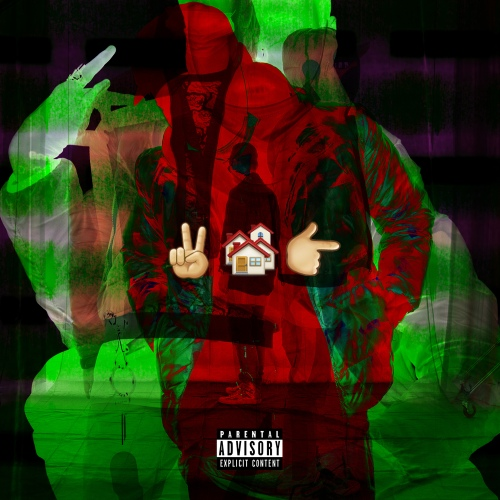

전형적인 틀 안의 이해나 공감과는 안전히 거리를둔 한 재능 있는 랩퍼의 이야기가 담긴 [2 Many Homes 4 1 Kids]는 그래서 많은 이에게 불편할 것이고, 같은 이유로 굉장히 매력적일 것이다.
리드머 2 MANY HOMES 4 1 KID 리뷰 中
음반엔 음원 차트 정상이나 높은 위치에 오르려는 것보다 아티스트로써 뛰어난 작품을 만들어야 한다는 그의 태도가 적극 반영되어있다. 그 욕심의 산물인 < 2 MANY HOMES 4 1 KID >는 올해 가장 흥미로운 데뷔작이자 괴작이 될 것이다.
IZM 2 MANY HOMES 4 1 KID 리뷰 中
앨범 발매 직후에는 호불호가 본작에 대한 평가가 크게 갈렸다. 앨범에는 전반적으로 논란이 될 가사가 많은 것은 물론이거니와 특히 3번 트랙인 '씹새끼 (Motherfucker Pt. 2)'의 경우에는 자신이 과거에 비행청소년이었으며 소위 일진이라고 불리는 무리에 속했던 적이 있음을 밝히는 내용이었기에 당연하게도 논란이 되었다. 또한 '씹새끼 (Motherfucker Pt. 2)'에서 JUSTHIS가 가사를 풀어가는 방식은 자신의 그릇된 과거를 반성하기보다는 당시의 '자신이 일진이 아니었던 아이들보다 우월했다'라는 식의 이야기 전개 방식으로 비춰 보일 수 있는 소지가 다분했기에 더욱 논란이 컸으며 한동안 힙합 커뮤니티에 그를 비판하거나 비난하는 글이 도배되었다. 간혹 일부 힙합과는 관련 없는 커뮤니티에도 해당 가사들이 나열되면서 그에 대한 비난 여론이 생겼으며 일부 커뮤니티 유저들의 경우 해당 사건을 힙합씬 전체에 대한 비난으로 확대시키는 경우도 존재했었다.
다만 이런 현상 중 일부는 앨범 발매 초기에 본작의 전체적인 흐름을 파악하지 못한 것에서 생긴 오해를 통해 빚어진 비난일 수도 있다. 물론 해당 트랙에서 그가 불량했던 과거를 고백하는 것은 사실이나 현재도 그 당시의 자신의 행동을 '우월하게' 판단한다거나 '좋았던 과거'라고 미화하고 있지는 않다는 것이 인터뷰와 앨범에 심어진 요소 등을 통해서 밝혀지면서 '일진이었던 과거'를 바라보는 방식에 대한 비난의 경우 조금은 줄어든 편이다. 다만 이후에는 오히려 '일진이었던 적도 없으면서 자신의 커리어에 있어서 좀 더 극적인 상황을 위해서 없던 과거를 조작한 것은 아닌가'라는 기믹 논란이 생기기도 하였다.
상기한 내용처럼 논란이 되기도 하였으나 처음 발매 당시부터 앨범 속에 숨겨진 의도가 굉장히 많다는 것이 알려지면서 일부 리스너들에게는 수작 혹은 명반으로 꼽히는 앨범이 되기도 하였다. 하지만 상당수의 리스너들은 이해하기 어렵다는 평들을 내비치기도 했다. 다만 앨범 발매 이후 JUSTHIS가 각종 인터뷰 등에서 꾸준하게 앨범에 심어둔 자신의 의도나 앨범 속 숨겨진 요소 등을 밝혔고 이에 따라 점점 본작에 곱씹어 볼 요소가 많다는 것이 많은 리스너들에게 알려지면서 가히 수작이라고 불러도 족한 앨범이라는 평까지 나오게 되었다. 게다가 음악 웹진 izm과 힙합 전문 웹진 리드머에서 각각 본작에 평점 4점을 부여하는 등 평론가들 사이에서도 좋은 평가를 받기도 하였다. IZM 평가, 리드머 평가
위의 평들과 별개로 발매 초기에는 Kendrick Lamar의 good kid, m.A.A.d city와 비슷하다는 이야기들도 많았다. 이에 대해서 JUSTHIS도 각종 인터뷰 등에서 밝혔는데 정작 JUSTHIS 본인은 앨범을 제작할 당시에 Kendrick Lamar의 음악을 잘 듣지 않았다고 한다. 너무 비슷하다는 평이 많아서 들어보려고 자신의 플레이리스트에서 찾아봤는데 없었다고 한다. 오히려 본작을 만드는 과정에서는 굳이 꼽으라면 Kendrick Lamar의 작품 중에서는 To Pimp A Butterfly를 더 많이 들었다고 한다.
또한 '2017 한국대중음악상 최우수 랩&힙합(음반) 부문'에 화지의 ZISSOU, 빈지노의 12, 넉살의 작은 것들의 신 , 허클베리피의 점 등 당시 명반이라고 손 꼽히던 앨범들과 함께 노미네이트되기도 하였으며, 2017 한국 힙합 어워즈 올해의 힙합 앨범 부문에도 노미네이트되는 등 평단으로부터 인정을 받은 앨범이 되었다. 아쉽게도 두 부문 모두 수상에는 실패하였으나 힙합 리스너들과 평단에 그의 존재를 확실하게 각인시켜주었기에 본작은 현재 그의 커리어를 있게 해준 앨범이라고 할 수 있다.
